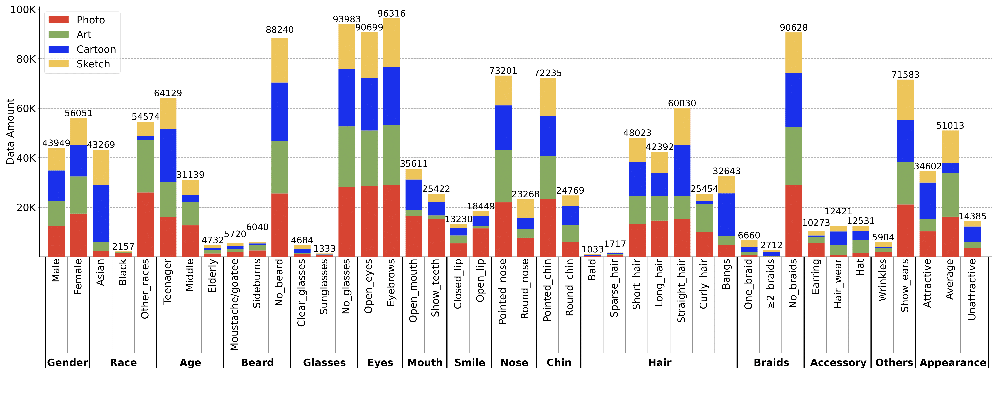

Details
The dataset includes 100,000 images across four visually distinct domains with 42 annotations within 15 attributes covering demographic and facial features.

Sample Images
Downloads
- The Face4FairShifts Dataset:
- Baidu Netdisk: here; Password: z8da
- Hugging Face: here
- A Croissant Format Metadata: here
- Full Distribution of Annotations: here; Password: q4ai
- Code Repository: here
User Agreement
- The FACE4FAIRSHIFTS dataset is available for non-commercial research purposes only.
- All images of the FACE4FAIRSHIFTS dataset are obtained from the Internet and are not the property of the authors' affiliated institutions. These institutions are not responsible for the content or the meaning of these images.
- Users of the FACE4FAIRSHIFTS dataset agree not to reproduce, duplicate, copy, sell, trade, resell, or exploit for any commercial purposes any portion of the images and any portion of derived data.
- Users of the FACE4FAIRSHIFTS dataset agree not to further copy, publish, or distribute any portion of the FACE4FAIRSHIFTS dataset. Authors reserve the right to terminate your access to the FACE4FAIRSHIFTS dataset at any time.
Acknowledgement
Annotators (Sorted Alphabetically):
Bosen Miao
Cairang Nima
Chen Zhang
Chenyang Zhang
Chenxi Feng
Dayu Gan
Fan Wu
Fengting Wang
Guanhong Su
Haiquan Yu
Haodong Qian
Haitao Huang
Han Xiang
Hongfu Qi
Hui Liu
Jiabin Huang
Jiajia Zhang
Jiahui Zhou
Jiamin Tang
Jiayu Zou
Junjie Gao
Kejun Chen
Kangxian Lu
Lili Mu
Liyan Liu
Liwen Zhu
Mingyu Yang
Peilin Cai
Rouyi Hou
Sha Liu
Shuoyuan Jing
Siqi Tao
Tianshuo Chen
Wenjie Yu
Wenkai Deng
Wentao Mou
Xianxia Shi
Xicheng Fan
Xiling Wei
Xing Chen
Xiru Ruan
Xueqing Liu
Yangyang Li
Yan Li
Yanli Lin
Ying Tao
Yingqi Liang
Yingwen Shi
Yingshuai Xu
Yixiao Wu
Yijing Dai
Yixiao Wu
Yongxu Zhu
Yu Pang
Yuanqian Xiao
Yue Li
Yueliang Zhang
Yumeng Lin
Yunwei Meng
Yuxiang Liu
Zhen Mo
Zhen Ouyang
Ziling Chen
Contact
meviuslab@gmail.com